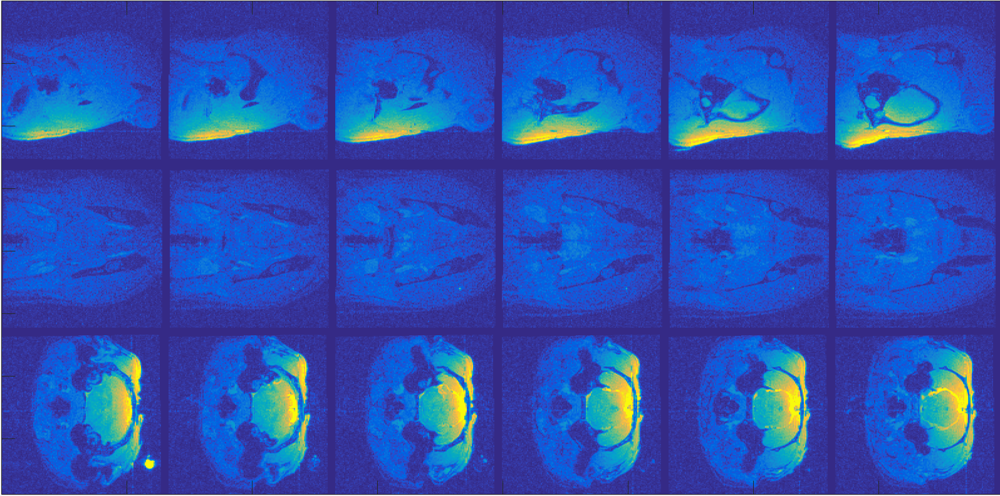

Lymphatics: 3D visualization and registration.
Keywords: graphics, matlab, C++, visualization, registration, optimization.
Description:
|  | Registration/lymphatics/fMRI project focuses on tracking cerebrospinal fluid which is injected into animals’ brain to establish how the fluid communicate with the components of the brain and to verify if the fluid get into the eyes via the optic nerves. Each dataset in this project contains volumes (3D frames) which are the images of the brain sampled after injecting the cerebrospinal fluid. |
Tasks:
Visualizing the data, including denoising and constructing 3D models from fMRI images.
Aligning the 3D images over time: For a precise tracking, the 3D images need to be perfectly aligned to remove the changes from the movements of the animal.
Demo (click the images to open):